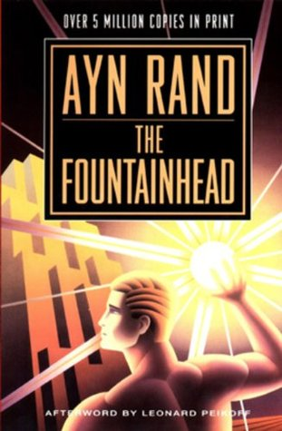

|  |
|
|---|
On a warm summer morning in North Carthage, Missouri, it is Nick and Amy Dunne’s fifth wedding anniversary. Presents are being wrapped and reservations are being made when Nick’s clever and beautiful wife disappears. Husband-of-the-Year Nick isn’t doing himself any favors with cringe-worthy daydreams about the slope and shape of his wife’s head, but passages from Amy's diary reveal the alpha-girl perfectionist could have put anyone dangerously on edge. Under mounting pressure from the police and the media—as well as Amy’s fiercely doting parents—the town golden boy parades an endless series of lies, deceits, and inappropriate behavior. Nick is oddly evasive, and he’s definitely bitter—but is he really a killer?